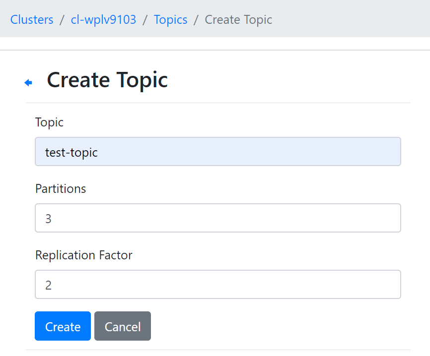
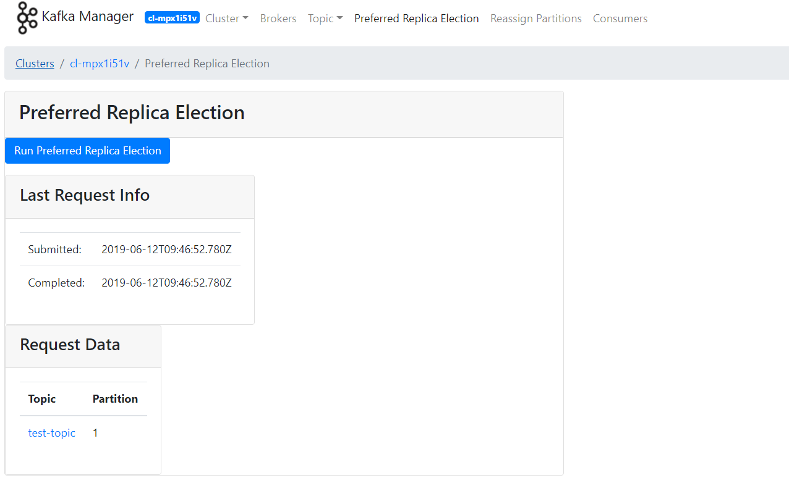

集群使用
集群信息
在集群创建完毕后，可以在控制台选择产品与服务 > AppCenter > 集群管理，进入集群管理页面查看已经创建的集群信息。
集群列表：
点击集群 ID可以查看该集群的详细信息：
集群基础资源监控信息：
配置参数
点击配置参数，可以修改Kafka参数，Kafka-manager参数。
扩容集群
点击集群基本属性右侧按钮里的扩容集群，在集群性能不足时提高集群的配置。
提示：硬盘扩容不会导致服务重启，扩容 CPU，内存等核心资源则会导致服务重启。
跨网访问
计算平台提供灵活的网络配置，一般建议 Kafka 集群和客户端（生产者、消费者）都在同一个 VPC 下工作，来达到最高的性能。如果 Kafka 在实际使用中会出现 producer，consumer 与 broker 都不在一个网段之中需要跨 VPC，可以考虑以下方法：
-
配置VPN，这种方法通常用于本地开发测试。
-
通过集群参数
advertised.host.name和advertised.port对外暴露出来，这种方式只适合于单节点kafka集群。需要在 broker 所在的路由器上配置端口转发 ，并且需要修改 broker 的advertised.host.name与advertised.port为路由器转发的源地址和源端口。这是 Kafka 各节点（broker、producer、consumer）之间是靠 advertised host 与 advertised port 通讯的。假设路由器的 IP 地址是 207.226.141.61，端口 9080 转发到 Kafka broker 192.168.0.10 端口 9092，点击配置参数，点击参数右侧的修改属性按钮，修改 advertised.host.name 为 207.226.141.61，修改 advertised.port 为 9080。
Kafka-manager 创建 Topic
点击 Topic，点击 Create，若不单独给 Topic 配置参数，会使用集群级别默认参数：

Kafka-manager 管理 Topic
点击 Topic，可以在 List 里找到 Topic 进行管理，修改 topic 参数：

Kafka-manager 平衡分区 leader
点击 Preferred Replica Election，通过 Run 执行。
提示：分区内必须有数据时才能使用。

日志及文件查看
为了更好的获取节点使用情况，系统提供了方便快捷的文件日志获取服务。配置VPN或端口转发后，确保本地可以访问集群网络。即可在本地浏览器里查看或下载相应节点的日志和文件。
在集群详情页的节点标签下可以看到集群每个节点的信息，如节点角色，节点IP。对于 Kafka-manager 节点，在浏览器输入http://节点IP，可查看 Kafka Manager 的日志文件。

对于 Kafka 节点，只需要获取其中一个节点 IP，在本地浏览器输入http://节点IP，可查看全部 Kafka 节点的 Heap Dump 文件（dump 目录）、数据文件（kafka-logs 目录）和日志文件（logs 目录）。
点击对应标题即可获取详细信息：